Ⅰ 本课目标Objectives
- 01分清 AF-S / AF-C / MF 三种对焦模式，并读懂屏幕上对焦指示的四种状态
- 02用对焦棒 + 后指令拨盘熟练选择对焦点与对焦框大小
- 03给运动主体选对 AF-C 自定设置（设置 1–6），理解三个参数的含义
- 04用眼睛识别把焦点稳稳定在眼睛上，用对象检测拍动物与车辆
- 05用 MF + 峰值 + 对焦确认完成风光超焦距与微距对焦
- X-S20
- 一支 AF 镜头
- （可选）三脚架
- （可选）一个可拍的人/宠物
Ⅱ 第一层：对焦模式Focus Mode
菜单路径：拍摄菜单 > AF/MF 设置 > 对焦模式。三个选项对应你熟悉的索尼 AFS / AFC / MF。
| 富士 | 索尼对应 | 佳能对应 | 行为 |
|---|---|---|---|
| l 单次 AF（AF-S） | AF-S | One Shot | 半按快门时对焦并锁定；适合静止主体 |
| k 连续自动对焦（AF-C） | AF-C | AI Servo | 半按期间持续跟踪距离变化；适合运动主体 |
| p 手动对焦（MF） | MF | MF | 靠镜头对焦环；风光超焦距、微距、暗光都靠它 |
两条容易踩的规则：无论菜单选了什么，只要镜头开关拨到 MF，就是手动对焦；另外若把「AF/MF 设置 > PRE-AF」设为开，AF-S 与 AF-C 下相机会一直在对焦（不按快门也在动），半按更快但更耗电。
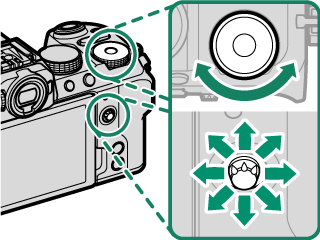
附 对焦指示速查
| 指示 | 状态 | 含义 |
|---|---|---|
| ( ) | 对焦中 | 相机正在找焦点，等它停下来 |
| z 点亮绿色 | 已合焦并锁定 | AF-S 下的正常状态，可拍 |
| ( z ) 点亮绿色带括号 | 已合焦，持续跟踪 | AF-C 下的正常状态，焦点会继续跟随 |
| A 闪烁白色 | 无法对焦 | 换对焦点、拉远或补光（第 2 课那张表） |
| j | 手动对焦 | MF 模式下的常规指示 |
Ⅲ 第二层：自动对焦模式AF Mode
同一套菜单里的「自动对焦模式」，决定对焦框的形状与工作方式。注意它的选项会随对焦模式变化——这是富士与索尼不一样的地方。
| 选项 | 在 AF-S（l）下 | 在 AF-C（k）下 | 典型用途 |
|---|---|---|---|
| r 单点 | 只对所选对焦点对焦 | 跟踪所选对焦点上的主体 | 风光精确对焦、人像半身、近静物 |
| y 区 | 在所选对焦区内自动选点 | 跟踪所选对焦区内的主体 | 运动、鸟类、可预测轨迹 |
| z 广域 / 跟踪 | AF-S 下为广域：自动找高对比度主体 | AF-C 下为跟踪：在整个画面里追主体 | 抓拍、主体位置不确定 |
| j 全部 | 在对焦点选择显示中，旋转后指令拨盘可在上三者之间循环切换 | 想随时换模式时用它 | |
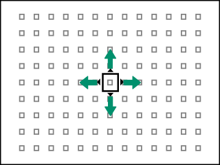
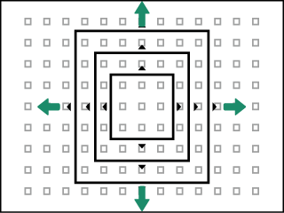
「广域 / 跟踪」为什么只有一个名字
菜单里 z 位显示为「广域/跟踪」，实际行为随对焦模式切换：AF-S 下是「广域」（自动找高对比度处），AF-C 下变成「跟踪」（框住主体后持续追）。所以切换对焦模式后，最好瞄一眼对焦框变成什么样了。
Ⅳ 第三层：把对焦点放到该在的地方Focus Area
菜单路径：AF/MF 设置 > 聚焦区域，或直接开始用对焦棒操作。这套手势一旦形成肌肉记忆，后面两课都会快很多。
| 动作 | 单点 | 区 | 广域 / 跟踪 |
|---|---|---|---|
| 对焦棒倾斜 | 移动对焦点 | 移动对焦区 | 移动对焦区（跟踪时把框住主体） |
| 对焦棒按下中央 | 放大对焦区域确认 | 回到中央对焦点 | 回到中央 |
| 后指令拨盘旋转 | 6 档对焦框大小 | 3 档（3×3 / 5×5 / 7×7） | — |
| DISP/BACK | 把对焦点一键归中（构图前先按它清零） | ||
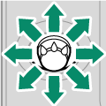
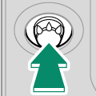
两个值得现在就改的细节设置：
| 设置 | 作用 | 建议 |
|---|---|---|
| 焦点数 | 117 点（9×13）或 425 点（17×25） | 风光用小点位、人像用多点，看习惯；425 点更精细 |
| AF 点显示 yz | 区 / 跟踪时是否显示每个小对焦框 | 想看得更干净就关掉 |
| 按方向存储 AF 模式 | 竖拍与横拍各自记住 AF 模式与区域 | 人像常竖拍 → 设为「开」，省得每次重调 |
| 焦点包围 | 对焦区域选择是全画面还是限制在边框内 | 默认即可 |
对焦变焦的三个限制
- 只在 AF-S + 单点 时可用；AF-C 或 PRE-AF 开启时不可用。
- 变焦倍率用后指令拨盘调整。
- 对焦棒中央的功能可在「按钮/拨盘设置 > 对焦杆设置」里改；也可以把「对焦变焦」指派给别的功能键。
Ⅴ AF-C 自定设置：给运动主体配方AF-C Custom
这是富士对焦系统里最「索尼味」的一块：6 组预设，每组由三个参数组成。拍孩子、宠物、飞鸟、车辆时，选错组比不选还糟。
| 设置 | 适合 | 追踪灵敏度 | 速度追踪 | 区域切换 |
|---|---|---|---|---|
| 设置 1 多用途 | 通用移动主体 | 2 | 0 | 自动 |
| 设置 2 忽略障碍 & 继续追踪 | 主体常被遮挡、或有杂物进入对焦区 | 3（更能忍） | 0 | 中心 |
| 设置 3 加速 / 减速主体 | 速度骤变（起跑、急停） | 2 | 2 | 自动 |
| 设置 4 突然出现的主体 | 忽然闯入画面 | 0（立刻换） | 1 | 前 |
| 设置 5 不规则移动 | 又快又乱、前后左右大动作 | 3 | 2 | 自动 |
| 设置 6 自定义 | 以上都不合适，自己调 | 按自己的偏好逐项设定 | ||
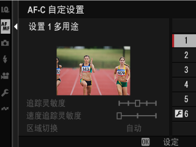
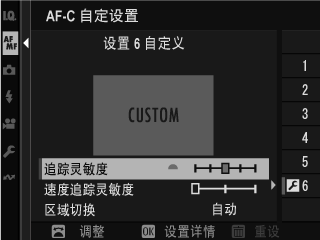
附 三个参数到底在调什么
| 参数 | 含义 | 调高的后果 |
|---|---|---|
| 追踪灵敏度（0–4） | 有东西挡在主体前/后时，相机等多久才切走焦点 | 越高越「粘」原主体，但主体真离开时反应更慢 |
| 速度追踪灵敏度（0–2） | 对主体移动速度变化的反应灵敏度 | 越高越能跟上骤变，但高反光/低对比主体更容易失焦 |
| 区域切换（仅区模式） | 区自动对焦优先哪个区域 | 前=最近的主体；中心=区中央；自动=先锁中央再跟踪 |
Vlog 与人像其实很少用 AF-C 自定
它主要解决「快速、无规律、可能被遮挡」的主体。你的三类场景里：风光用 AF-S 单点或 MF；人像用 AF-S + 眼睛识别（下面一节）；Vlog自拍用 AF-C + 广域/跟踪即可，设置 1 足够。真正需要细调的是拍小孩、宠物、运动赛事。
Ⅵ 对象检测与眼睛识别Subject Detection
两项功能二选一，开一个会自动关掉另一个——这点必须先记住，否则你会发现「测光怎么不听话」（第 3 课埋的伏笔）。
A 脸部识别 / 眼睛识别（拍人的正解）
| 选项 | 行为 | 建议 |
|---|---|---|
| 脸部识别开 + u 眼睛识别自动 | 检测到脸时自动选择一只眼睛 | 人像首选 |
| 脸部识别开 + v 右眼 / w 左眼优先 | 固定优先某一只眼 | 特写、构图可控时用 |
| 脸部识别开 + g 眼睛识别关 | 只认脸，不对眼 | 全身、远景人像 |
| 关 | 关闭脸部与眼睛优先 | 风光必选此项 |
实战要点：对焦区内检测到的单张脸用白框标记；有多张脸时相机自动选一张，你可以轻触屏幕重新指定；对焦于眼睛时，用被指派「左眼/右眼切换」的功能键可以换眼。若主体离开画面，相机会等一段时间——所以白框有时会出现在没有脸的地方，这是设计如此。
B 对象检测设定（拍动物与车）
| 对象 | 相机跟踪的部位 |
|---|---|
| E 动物 | 狗、猫 |
| F 鸟 | 鸟类 |
| G 汽车 | 车身或车头（偏运动型汽车） |
| H 摩托车 & 自行车 | 骑手 |
| I 飞机 | 驾驶舱、机头或机身 |
| J 火车 | 驾驶室或车头 |
你的三类场景怎么配
- 风光：对象检测 = 关，脸部识别 = 关。否则第 3 课的测光模式会被接管。
- 人像：对象检测关、脸部识别开 + 眼睛识别自动 + AF-S 单点。
- Vlog 自拍：脸部识别开 + 眼睛识别自动 + AF-C + 广域；走动时眼睛识别会短暂丢帧，属正常。
- 拍到宠物（猫狗）才用对象检测「动物」；这两项不能同时开。
Ⅶ 手动对焦：风光的看家本领Manual Focus
把「对焦模式」设为手动对焦后，用镜头对焦环调焦：向左转减小对焦距离，向右转增加。方向不对可在「按钮/拨盘设置 > 镜头变焦/对焦设定」里反转。
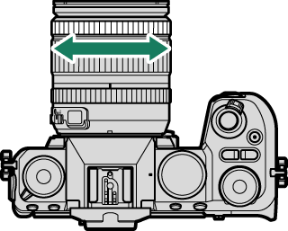
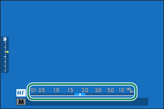
这张图里的蓝条就是景深——白线是当前合焦距离，蓝条覆盖的区间都是清晰的。风光超焦距对焦的全部秘密就在这条蓝条上：转动对焦环，让蓝条的后端刚好碰到无穷远，前景能清晰的最大范围就到位了。景深标尺依据可在「AF/MF 设置 > 景深标尺」中选 像素（屏幕高分辨率查看）或底片格式像素（打印用途）。
附 四种手动对焦助手
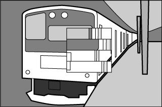
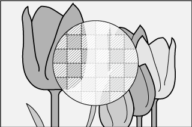
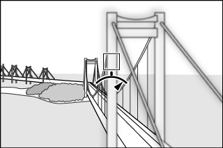
| 助手 | 怎么判断合焦 | 适合 |
|---|---|---|
| 峰值对焦 | 合焦处轮廓被彩色高亮（可选颜色与级别） | 风光远景、微距，最推荐 |
| 数码裂像屏 | 中央四块分割图像对齐 | 有明确线条的静物 |
| 数字微棱镜 | 网格纹消失、画面变清晰 | 传统手动镜头手感 |
| 对焦计 | 指针指向正上方（偏左=焦点在前，偏右=在后） | 快速粗调，精度一般 |
还有两个 MF 的辅助开关：对焦确认设为开后，一转对焦环就自动放大所选对焦区域（按对焦棒中央退出）；AF+MF 设为开，则半按快门锁定后可以再转对焦环微调——这是「先自动，再手动修正」的混合用法，拍静物很好用。
MF 下的即时自动对焦
在 MF 模式里按下被指派了 AF-ON / 对焦锁定的按钮，相机可以临时用自动对焦对准一次：「即时自动对焦设定」里，AF-S = 按一下对一次，AF-C = 按住期间持续对焦。超焦距对焦时用 AF-S 先对到前景、再切回手动微调，比纯手拧快得多。
Ⅷ 触摸对焦与视频对焦Touch & Movie AF
触摸屏模式有四种，选错会让「点一下就拍照」这种事突然发生。路径：AF/MF 设置 > 触摸屏模式。
| 模式 | 轻触画面时 | 建议 |
|---|---|---|
| 触控拍摄 | 对焦并立刻释放快门 | 自拍、低角度偷拍；日常慎用 |
| AF | 只对焦并锁定距离；点 AF OFF 解除 | 三脚架上定点对焦最方便 |
| 区域 | 把对焦框移到触点 | 日常推荐：只挪框，不触发拍照 |
| 关闭 | 触控关闭 | 戴手套、雨天 |
若想彻底禁用触控并隐藏触摸屏模式指示，到「按钮/拨盘设置 > 触摸屏设置 > 触摸屏设置」选关。
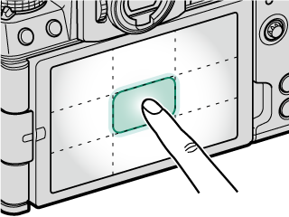
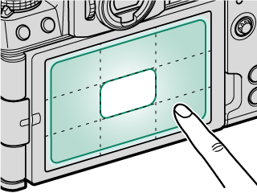
视频（Vlog）场景的对焦设置与照片分开存储，在动画菜单的「AF/MF 设置」里。三个对你最要紧的项：
- AF-C 速度：调慢更平滑，调快更跟手
- AF-C 灵敏度：主体被遮挡时是否换焦
- 对象检测：自拍 Vlog 时保持脸部识别开
Vlog 跟焦的实用配方
自拍走动口播：AF-C + 广域/跟踪 + 眼睛识别自动，AF-C 速度调慢（避免焦点在脸上来回「呼吸」）。拍摄产品测评：Vlog 档的产品优先模式设为开，焦点会锁在前景物体上，手伸过去也不会跳到手。
Ⅸ 迁移提示From Sony / Canon
对焦这块，和索尼 / 佳能最不一样的 5 点
- 对焦模式在菜单里，不在机身上：索尼有机身 AF/MF 拨杆，富士只能进「AF/MF 设置」或用 Fn 快捷键。建议一开始就把它指派到一个 Fn 键（第 8 课）。
- 「自动对焦模式」的选项随对焦模式变：AF-S 下是单点/区/广域，AF-C 下第三项变成「跟踪」。索尼的 Wide/Tracking 是独立一项。
- 对象检测与脸部识别互斥：开一个自动关另一个，而且它们会接管测光。索尼的概念是分开的「主体识别」。
- 对焦框大小要手动拨：后指令拨盘调框大小是富士特色，索尼多是固定尺寸或菜单里改。
- 景深标尺是 MF 的杀手级 UI：蓝条显示景深范围，超焦距对焦可以「看着调」而不是靠经验估。索尼的峰值对焦没有这个。
Ⅹ 课后练习Exercise
-
01
简答：拍半身人像，希望焦点稳稳落在眼睛上，对焦模式与两项识别设置分别该怎么选？
参考答案
对焦模式 AF-S（单次 AF） + 自动对焦模式单点；「脸部识别/眼睛识别设置」设为脸部识别开 + 眼睛识别自动；对象检测必须为关（否则会自动关掉脸部识别）。
-
02
判断：AF-S 与 AF-C 下，「广域 / 跟踪」这个选项的行为是一样的。
参考答案
错误。AF-S 下是广域（自动对焦于高对比度主体），AF-C 下变成跟踪（框住主体后持续追随）。
-
03
选择：三脚架上拍远景风光，想确保从前景到远山都在景深内，最可靠的做法是？
参考答案
用 MF（手动对焦），打开峰值对焦辅助，转动对焦环观察手动对焦指示的蓝条（景深），让蓝条后端刚好覆盖到无穷远——这就是超焦距对焦。
实拍小任务（二选一）
- 人像向：用眼睛识别 + AF-S 单点，拍 5 张半身特写，回放时逐张按对焦棒中央放大，检查焦点是否都在眼睛上。
- 风光向：三脚架上用 MF + 峰值，把蓝条后端推到无穷远拍一张；再直接对无穷远拍一张。回放对比前景的清晰度差异。
Ⅺ 出处与延伸Sources
- 本课对应的官方说明书页面（主教材）
- 自动对焦 — 对焦模式、自动对焦模式、对焦点选择与显示、对焦变焦、对焦困难的对象
- 手动对焦 — 对焦环、手动对焦指示与景深、四种对焦助手
- AF/MF 设置（静态摄影） — AF-C 自定设置、对象检测、脸部/眼睛识别、AF+MF、释放/对焦优先、AF 范围限制器、触摸屏模式
- AF/MF 设置（动画录制） — 视频对焦设置（与照片分开存储）
- 版权说明
- 本课插图均取自 FUJIFILM 官方在线说明书，© FUJIFILM Corporation，仅用于个人学习。
学习提醒
对焦解决了「清晰」，下一课解决「拍得到」——包围、连拍、HDR、全景、多重曝光与闪光。风光最常用的 HDR 与全景都在那一课。